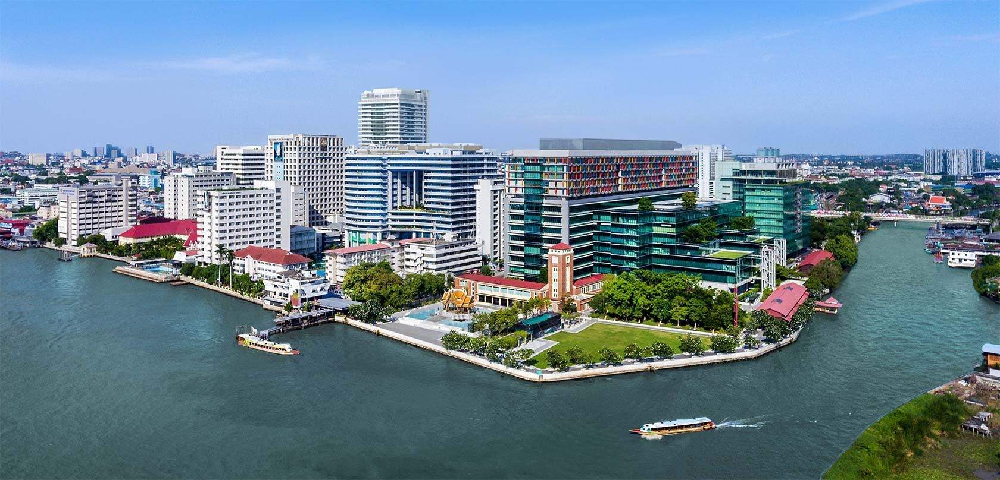
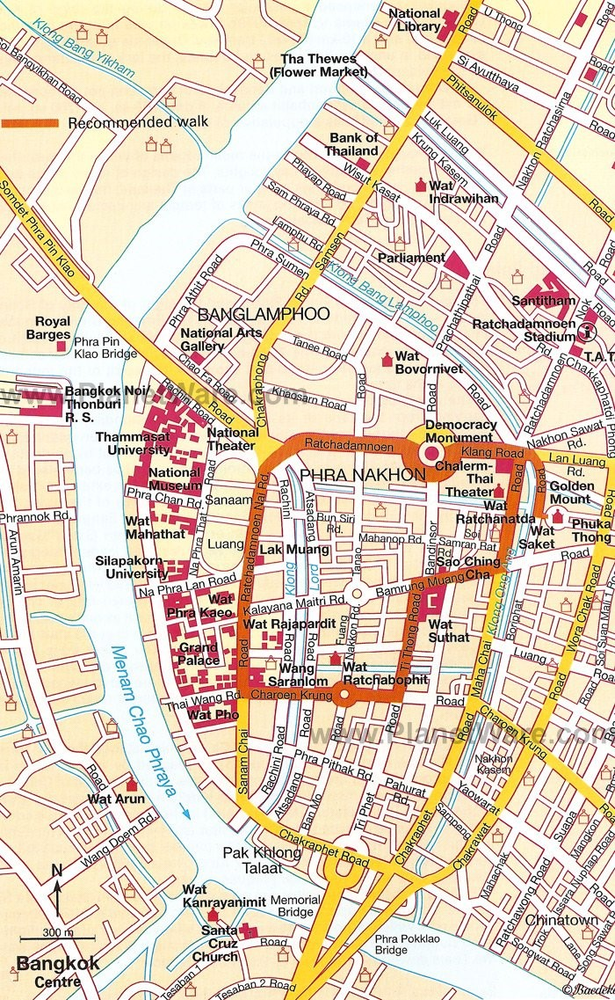

<div class="card-block bg-faded">
	<div class="container">
        <div class="col text-muted">
        <p>The Genomics Standards Consortiums' 23rd workshop is scheduled for August 2023 and will be held in Bangkok, Thailand.</p>
            <div class="text-info"><h5>Venue:</h5></div>
			<div><a href="https://www2.si.mahidol.ac.th/en/" target=_blank></a></div>
			<div class="text-info"><a href="https://www2.si.mahidol.ac.th/en/" target="_blank">Siriraj Hospital Mahidol University</a></div>
<p><b>Location:</b> SiMR Building, Siriraj Hospital Mahidol University, 2 Thanon Wang Lang, Siriraj, Bangkok Noi, Bangkok 10700, Thailand
</p>
			<div class="text-info"><h5>Accomodations:</h5></div>
<p>Attendees are encouraged to make their hotel booking as early as possible. </p>

<p>The GSC have arranged conference rates with 3 local hotels (see below), however there is also a wide selection of nearby hotels with rooms ranging from more affordable to luxury, there are a selection highlighted on <a href="https://www.google.com/maps/@13.7443027,100.5013665,13z/data=!4m3!11m2!2s5aSHnvShecja8TV6OiN3YkAeIXtGDg!3e3" target=_blank>this Google Map</a> along with the venue location for your reference.</p>
<div><a href="https://www.google.com/maps/@13.7443027,100.5013665,13z/data=!4m3!11m2!2s5aSHnvShecja8TV6OiN3YkAeIXtGDg!3e3" target=_blank></a></div>
<br>
<p> To make a booking at one these 3 hotels, please contact the relevant hotel via email or telephone and quote the booking reference/group name "GSC 2023".</p>
<ul>
<dt><a href="https://www.rivaarunbangkok.com/en/" target=_blank>Riva Arun</a> (<a href="https://goo.gl/maps/jab4NXnpStsLCWr59" target=_blank>map</a>) email: <a href="mailto:stay@rivaarunbangkok.com">stay@rivaarunbangkok.com</a></dt>
<dd>- Studio -THB 4,050 net per room per night including breakfast</dd>
<dd>- Superior - THB 4,320 net per room per night including breakfast </dd>
<dd>- Deluxe - THB 4,680 net per room per night including breakfast </dd>
<dt><a href="https://www.rivasuryabangkok.com/en/" target=_blank>Riva Surya</a> (<a href="https://goo.gl/maps/6zaRBYHagPSorTuY8" target=_blank>map</a>) email: <a href="mailto:stay@rivasuryabangkok.com">stay@rivasuryabangkok.com</a></dt>
<dd>- Urban Room - THB 4,125 net per room per night including breakfast</dd>
<dd>- Standard room- THB 4,970 net per room per night including breakfast</dd>
<dd>- Deluxe Room - THB 6,077 net per room per night including breakfast</dd>
<dd>- Premium Room - THB 6,925 net per room per night including breakfast</dd>
<dt><a href="https://www.theatreresidence.com" target=_blank>Theatre Residence</a> (<a href="https://goo.gl/maps/orixJAGSUGeGDuVr8" target=_blank>map</a>) email: <a href="mailto:rsvn@theatreresidence.com">rsvn@theatreresidence.com</a><dt>
<dd>- Superior Room - THB 2,000 net per room per night including breakfast</dd>
<dd>- Deluxe Room- THB 2,500 net per room per night including breakfast</dd>
<dd>- Premier Room - THB 2,900 net per room per night including breakfast</dd>
<dd>- River View Room - THB 3,300 net per room per night including breakfast</dd>
</ul>
<p> Please note - All hotel bookings are your responsibility, please check the terms and conditions of bookings before you confirm them.</p>

<div class="text-info"><h5>Tourist information:</h5></div>
<div class="text-info"><h6>Thailand</h6></div>
<br>
<p>Country Code: + 66 Time Zone: GMT +7 Currency: Thai Baht (THB) Voltage: 220 V</p>
<br>
<p>Located in South-East Asia, Thailand is bordered by Malaysia and the Gulf of Thailand to the south, Myanmar and the Andaman Sea to the west, Cambodia to the east and the Lao People’s Democratic Republic to the north and north-east. Thailand covers about 513,000 square kilometres, stretching approximately 1,715 kilometres from north to south and 915 kilometres at its widest point from east to west. As of May 2023 it had a population of 70.3 million, based on Worldometer elaboration of the latest United Nations data. In terms of population it is the fourth largest state in South-East Asia. The country can be divided into four natural regions: the mountainous north, where temperatures are cool enough for the cultivation of lychees and strawberries; the north-east, a rolling semi-arid plateau bounded on the north and east by the Mekong River; the isthmus of the south with its hilly rubber plantations, fruit orchards, coves and bays; and the central region, the basin of the Chao Phraya River and a most fertile rice-growing area. This region has become the administrative, political and commercial centre of the country. Bangkok has a tropical monsoonal climate with high humidity, but it is located outside the typhoon belt. Most of the country experiences three seasons, the cool season from November to January, the hot season from February to April and the rainy season from May to October. The average rainfall (mostly in the form of heavy showers in the rainy season) is 142 centimetres and the annual mean temperature is 28 degrees Celsius, ranging from a night minimum of 20 degrees Celsius in the cool season to a maximum day temperature of 38 degrees Celsius in the hot season. With the high humidity the weather can be oppressive, but the widespread use of air-conditioners alleviates the heat and humidity.</p>
<br>
<div class="text-info"><h6>Bangkok</h6></div>
<p>Bangkok, known as Krung Thep (City of Angels) in Thai, has been the capital since 1782. It has grown rapidly in recent years as the percentage of urban residents in Thailand has increased to 40 per cent in 1999 from only 13 per cent in 1970. Bangkok’s official population figures are 6.3 million, making it the predominant urban area in Thailand. Unofficially the total could reach 10 million. Almost all major domestic and foreign companies are located in the capital, as are all government ministries and most of the country’s leading educational and medical facilities, and sporting and cultural activities. Bangkok is the focal point of Thailand’s aviation, railroad and communications networks, as well as the first destination for the majority of tourists who come to occupy its more than 20,000 hotel rooms. Bangkok, with its huge and diverse population, its shopping centres and high-rise office buildings, its many Western-style apartment buildings, and its cosmopolitan sophistication, is truly an international city, but it still retains temple compounds, Chinese shophouses and a vibrant street life.</p>
<br>
<div class="text-info"><h6>Language</h6></div>
<p>Thai is the official language of the country, taught in all the schools, with four distinct dialects in the different regions. It is a tonal language with five tones: rising, falling, mid, high and low. This means that one letter may have several different sounds and one sound may be represented by different letters. Mostly monosyllabic, Thai has few tenses, but a great abundance of pronouns that are used to reflect status. The literacy rate is 93.8 per cent. The English transliteration of Thai words may vary considerably, for example, the street on which the United Nations Building stands can be written as: Rajdamnoen, Rajdamnern, Rajadamnern, Rajadamnoen or Ratchadamnoen.
In Bangkok, English is widely spoken, written and understood.</p>
<br>
<div class="text-info"><h6>Thai Cuisine</h6></div>
<p>Thai cuisine is justifiably world famous. It is a subtle and complex blend of Chinese, Indian, Malay and Polynesian influences. Seasoned with garlic, ginger and chilies, it mixes lime juice, lemon grass, fresh coriander, basil, galanga root, tamarind juice, ground peanuts and coconut milk. Dishes range from pungent curries, spicy salads, barbecued meat and seafood, to mild noodle dishes that can be made spicy by adding different sauces. It surprises in its mix of meat and seafood in the same dish and in the way it is served. There are some very sweet desserts, some deriving from Portuguese dishes, and a great range of tropical fruits. In a Thai meal, all the dishes are put in the center of the table to be shared, but only one serving at a time is eaten with the rice. </p>
<p>Popular local dishes: Tom Yum Soup, Pad Thai, Green Chicken Curry, Mango Sticky Rice, Fried Basil and Pork, Fried Rice, etc</p>
<br>
<div class="text-info"><h6>Local Attractions of Bangkok</h6></div>
<p>Bangkok is everything you'd expect from the capital of Thailand, it’s colorful, exciting, infuriating, and simply magical, it’s also serves as a gateway to many other parts of Thailand. From here, you can hop a short flight to Phuket, Chiang Mai, Koh Samui, and other popular destinations. You can also board a train or hop on a bus for little money, and visit national treasures such as Ayutthaya, Lopburi, and many other gems around the country.</p>
<p><em>1. The Grand Palace</em></p>
<p>If you only visit one major historical tourist attraction in Bangkok, this should be the one. The royal compound lives up to its name, with spectacular structures that would put the most decadent modern monarchs to shame.
Built in 1782, the grand palace was the royal residence for generations and is still used for important ceremonies and accommodating heads of state. Dress modestly when visiting the Grand Palace, which basically means covering your arms and legs and avoiding any sloppy attire.</p>
<p><em>2. The Giant Swing</em></p>
<p>In the center of the busy square in front of Wat Suthat stands one of Bangkok's most eye-catching sights: the 27-meter-high teak frame of the so-called Giant Swing. Built in the 1700s to be used as part of traditional Brahmin (Hinduist) ceremonies, the swing was later damaged by lightning and became just decorative.
This used to be the focus of a religious ceremony held every year in December after the rice harvest. Teams of three took turns to balance on a dangerously narrow board and be swung 25 meters or more off the ground "up to Heaven," at which point they would attempt to catch a bag of silver coins in their teeth. King Rama VII banned the contest in 1932, following a number of fatal accidents.</p>
<p><em>3. Chatuchak Market</em></p>
<p>This sprawling semi-outdoor weekend market is the largest in the world and one of the top things to do when visiting Bangkok. Shoppers can find everything from jewelry and religious icons to pet supplies, paper lamps, and delicious street food here. Chatuchak Market is home to over 15,000 stalls offering just about anything you can dream up-even better, any souvenir you might want is probably available here at a much cheaper price than anywhere else in Bangkok.
This is a great place to mingle with locals and immerse yourself in everyday Thai life, so arrive early and clear your schedule for the rest of the day if you want to do this place justice.
The market is adjacent to the Kamphaengpecth Station (MRT), about a five-minute walk from Mochit Skytrain (BTS) Station and Suan Chatuchak (Chatuchak Park) Station (MRT)</p>
<p><em>4. China town</em></p>
<p>To really experience Bangkok, you have to try the local cuisine. Of Bangkok's many colorful and diverse neighborhoods, Chinatown stands out as one of its most exciting. In fact, Bangkok's Chinatown is one of the largest Chinatowns in the world, and, as it so happens, one of the best.
The main artery of Chinatown is Yaowarat Road. This energetic thoroughfare and its side streets are slammed with restaurants, food carts, gold stores, cafés, herb shops, fruit stalls, and so much more. If you've come to Chinatown to eat, then you'll want to wait until the sun sets, when the entire neighborhood explodes with food stalls overflowing with mouthwatering treats.
Chinatown is slowly revamping, as well. Today you'll find more "fine dining" dim sum houses and swanky hotels than before. Still, the energy is always swirling and chaotic, but it's always one of the most beautiful parts of Bangkok.
Surprisingly, some of the best street food in Bangkok is on China town – both in the little stalls lining up the street and in the small shacks and restaurants just off the main road selling pad Thai, pad see ew, and mango sticky rice.</p>
<br>
<div></a></div>
<br>
<div class="text-info"><h6>Current weather</h6></div>
<p>As Bangkok holds claim to being one of the hottest city in the world, expect daytime temperatures to be in excess of 30 degrees centigrade throughout the year.</p>
<p>Current temperature range: 30 - 37°C.</p>
<p>Be Prepared for the Brutal Heat. There's no sea breeze here to help with the burning temperatures, and no break from the humidity when you're walking the streets of Bangkok. So if you're out for the day, plan on mixing some indoor shopping along the way for some air-conditioned relief. Stay hydrated at all times and wear plenty of sunblock. Choose cotton and linen clothing and grab an umbrella or hat when you're at Chatuchak Market for some extra sun protection.</p>
<br>
<div class="text-info"><h6>Additional information</h6></div>
<p>As Bangkok is a special place, we're sure many of you will wish to make the most of your time in Bangkok, but please be aware that the organising committee are unable to provide personal assistance with your tourism plans. There are a number of great websites that can help you discover more before your visit;</p>
<br><a href="https://www.tripadvisor.co.uk/Attractions-g293916-Activities-Bangkok.html" target=_blank>TripAdvisor</a>
<br><a href="https://www.thecrazytourist.com/top-25-things-to-do-in-bangkok/" target=_blank>The Crazy Tourist</a>
<br><a href="https://www.dreambigtravelfarblog.com/things-to-do/bangkok-thailand" target=_blank>Dream Big Travel Far Blog</a>
<br>
		
        </div>
    </div>
</div>